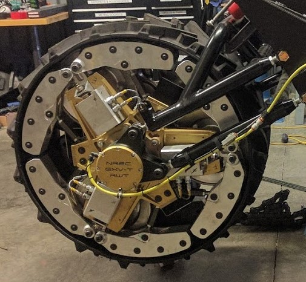

Wheel-to-Track Transformer Robot
 I served an electrical engineer helping to automate a Ford Raptor Pickup truck DARPA's Ground Vehicle X program. My team's efforts
were to support the
I served an electrical engineer helping to automate a Ford Raptor Pickup truck DARPA's Ground Vehicle X program. My team's efforts
were to support the
 I designed and programmed the controller that assisted in the wheel's transformation and monitored it's state by programming a STM microcontroller and realizing analog circuits to suppot the wheel's sensors. I integrated an off-the-shelf motor controller on the wheel to control transformation and I designed the cable harnesses both on and external to the wheel. Furthermore, I designed the electronics located on the test platform to both power and monitor the wheel's external state. I also worked with our mechanical engineering team to ensure the electronics were designed to sustain the shock, vibration, and environmental requirements. Finally, I presented regular updates to DARPA sponsors through both technical reports and presentations. The wheeltrack was delivered on time and the lessons learned from my prototype led to the development of the third edition of the wheeltrack system displayed in the image on this page.
Further Information
I worked on this project while I was an electrical engineer at Carnegie Mellon University's National Robotics Engineering Center. NREC is known for its close collaborations with government and industry sponsors to apply robotics technologies to different sectors. This proeject was recognized by Popular Science as one of the "Best of What's New" in 2018.
Skills and Tools Used
- Schematic/PCB Design
- Altium Designer
- Cable Harness Design
- High Current Power Design
- Rugged Systems Design